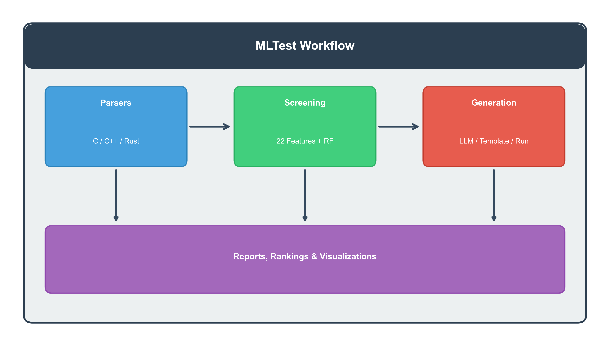
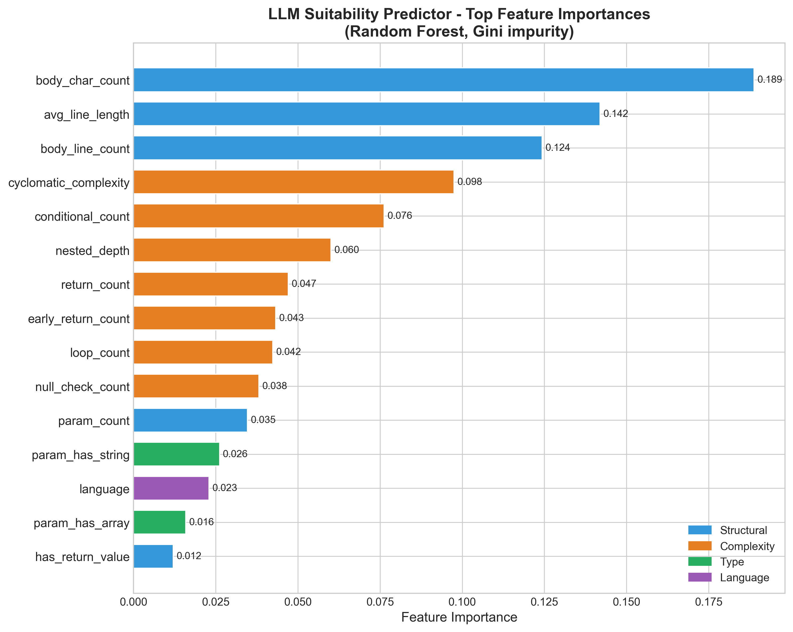
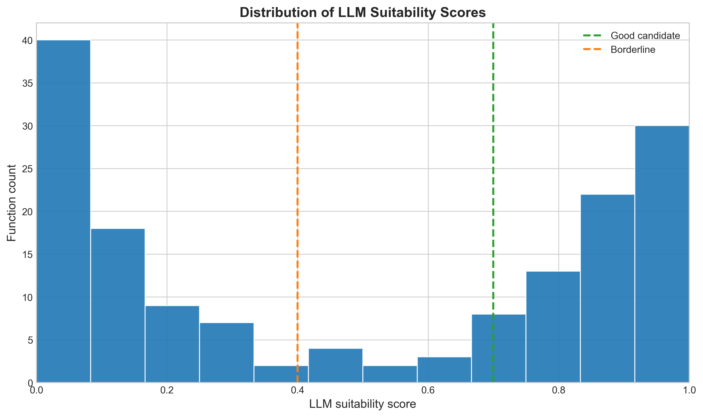
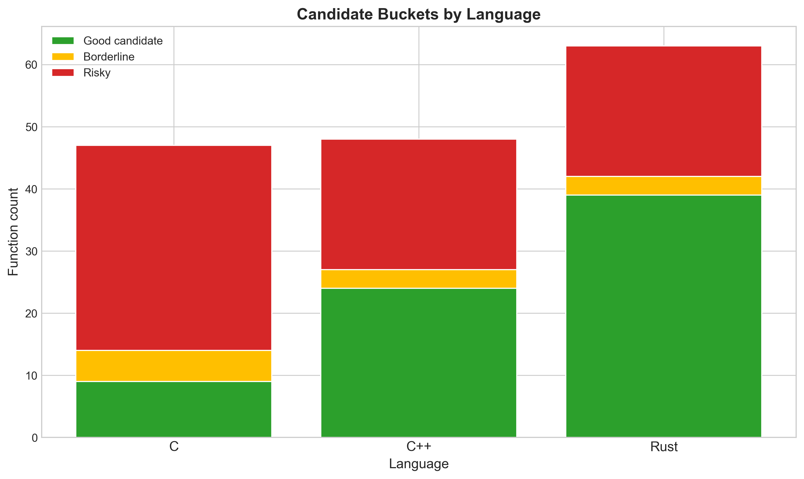

MLTest Progress Dashboard
Midterm review view of the dissertation project: static-code-based prediction
of LLM suitability for unit test generation in C, C++, and Rust.
Generated from results\llm_testability_report.json
Screening report timestamp: April 26, 2026 13:20
Current Goal
- Present the dissertation as a screening-first system rather than a broad template-vs-LLM comparison.
- Show that the implemented model can rank functions by likely LLM usefulness before expensive generation.
- Demonstrate that the remaining work is final polishing, defense preparation, and presentation refinement.
Recommended Live Demo
- Run
python -m mltest screen benchmarks/cpp/math_utils.cpp.
- Explain the score, bucket, and why static screening is safer than a live cloud-generation demo.
- Use this dashboard as the visual summary while answering progress questions.
Language Breakdown
C
Total47
Good9
Borderline5
Risky33
C++
Total48
Good24
Borderline3
Risky21
Rust
Total63
Good39
Borderline3
Risky21
System Architecture

Feature Importance

Suitability Distribution

Bucket Breakdown by Language

What Is Already Done
- Benchmark corpus prepared across C, C++, and Rust.
- Static feature extraction and trained Random Forest model are integrated into the project.
- Runnable screening workflow is available through
mltest screen.
- Primary figures and evaluation artifacts have been generated.
- The thesis manuscript has already been rewritten around the narrowed scope.
What Still Needs To Be Done
- Final polishing of slides, narration, and defense wording.
- Short stable demo preparation around the screening workflow.
- Final cleanup of appendix vs. main-claim materials in the defense assets.
- Practice concise answers for scope, model target, usefulness, and limitations.
Top Candidate Functions
| Function | Language | Benchmark | Score | Bucket |
|---|
| slice_min | Rust | data_structures | 1.000 | good_candidate |
| slice_max | Rust | data_structures | 1.000 | good_candidate |
| starts_with | Rust | string_utils | 1.000 | good_candidate |
| ends_with | Rust | string_utils | 1.000 | good_candidate |
| to_uppercase | Rust | string_utils | 1.000 | good_candidate |
| to_lowercase | Rust | string_utils | 1.000 | good_candidate |
| find_first_of | Rust | string_utils | 1.000 | good_candidate |
| split_words | Rust | string_utils | 1.000 | good_candidate |
Lowest-Score Functions
| Function | Language | Benchmark | Score | Bucket |
|---|
| second_largest | C | data_structures | 0.000 | risky |
| partition | C | data_structures | 0.010 | risky |
| fibonacci | C | math_utils | 0.015 | risky |
| remove_duplicates | C | data_structures | 0.020 | risky |
| two_sum_pairs | Rust | data_structures | 0.020 | risky |
| array_min | C | data_structures | 0.022 | risky |
| array_max | C | data_structures | 0.022 | risky |
| array_reverse | C | data_structures | 0.030 | risky |
Useful Short Answer For Review
The project is no longer being defined from scratch. The benchmark corpus,
feature extraction, model-based screening workflow, figures, and revised
thesis narrative are already in place. The remaining work is mainly final
polishing, presentation refinement, and defense preparation.